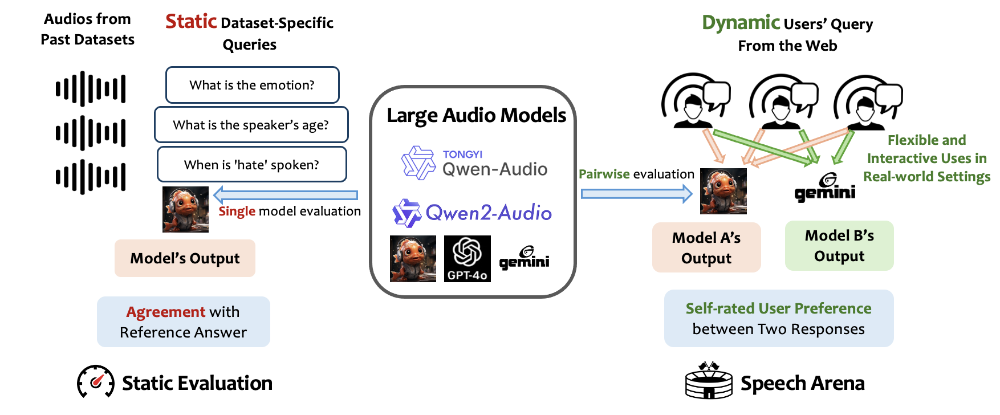

Talk Arena
Talk Arena
Interactive Evaluation of Large Audio Models
Demo
Overview

Comparison between Static Evaluation and Talk Arena.
Recent efforts towards creating multimodal models have resulted in LLMs capable of processing audio inputs such as speech. Speech is a low-friction interface which expands social and phonetic interaction opportunities with end users. Prior work has benchmarked audio models on a set of disjoint static audio tests such as sarcasm or humor detection. However such static benchmarks lack the complex dynamics of real user interactions and preferences. Inspired by arena-style evaluations for text LLMs we introduce Speech Arena, an open platform for evaluating Large Audio Models with pairwise human preferences. Speech Arena helps to reveal insights on:
What use cases users are exploring with large audio models? We can analyze user queries from the wild and compare the use case difference with traditional use cases of text LLMs.
Which Large Language Model users prefer the most? Users vote their preferences with self-initiated prompts, which better reflects the actual user experience.
Are static speech comprehension benchmarks predictive user preferences in interactive settings? It helps to reveal the gap between the mainstream evaluation method for audio models and actual user preferences.
Static Evaluation
We select 18 speech comprehension benchmark and perform evaluation for 10 different large audio models.
A wide range of tasks are covered, which include Humor Detection, Sarcasm Detection, Intent Detection, Relationship Classification, Gender Classification, Age Classification, Accent Classification, Speech Grounding, Language Identification, Speech Entity Recognition, Speech Question Answering, and Speech Instruction Following.
To ensure robustness, we report the average of model performance using three different prompt variations. For public_sg_speech, openhermes, and alpaca datasets, we report the cfm metric. For other tasks, we report the macro F1 scores.
Close sourced models like Gemini and GPT4o generally tops the leaderboard. For open-sourced models, Qwen2-Audio demonstrates outstanding performance on SpeechQA tasks and DiVA shows excellent speech instruction following capability that outperforms all other models.
We also perform evaluation for the sequential pipeline of Whisper plus Llama3-8B-Instruct. It shows relatively good performance for tasks like emotion recognition and speech QA, which means some of the data instances can be inferred from content only. However, for each and every task there are speech models outperforming it. This suggests that some information like emotion, relationship, and sarcasm can be embedded in vocal cues and requires understanding beyond content.
Interactive Evaluation
(A) User Preference
As an initial effort, we collected over 500 votes using the talk arena for pairwise comparisons between Qwen2-Audio and DiVA (reported in Diva paper).
DiVA is significantly preferred by users over Qwen2-Audio with a 72% win rate. We will continue to scale up the experiment with more interactions and model options.
(B) Comparison with Static Evaluation
We compare the user preference result in interactive evaluation to that of static evaluation:
We can see that results on some of the static benchmarks align with the user preference, for tasks like humor detection, emotion recognition, relationship classification and instruction following.
Interestingly, for speech question answering, Qwen2-Audio performs better than DiVA datasets on both cn-college-listen and public_sg_speech datasets. However, this trend is reversed in the user preference results.
(C) User Queries
We also perform qualitative analysis for user voice queries and obtained some insights:Topics of user queries.
We identify three common types of user queries:
1) Pragmatic queries like resume building tips, weather and time checking. These queries are mostly short (one sentence only). It usually requires the audio model to ask more about the context to provide a personalized response.
2) Knowledge expansion questions like asking about theory of relativity. These queries need the audio model to be well equipped with a diverse and comprehensive knowledge base to provide factual and detailed information across a wide range of topics.
3) Personal sharing on recent dilemma, personal opinions and habits. These queries are often longer and more elaborated. To provide good responses, the voice assistant may need to make inferences about the users' tone and capture details well enough.
Difference from text queries.
Unlike how users interact with text-only LLMs through typing, we found some unique aspects in speech interaction:
1) Background noises like resume building tips, weather and time checking. These queries are mostly short (one sentence only). It usually requires the audio model to ask more about the context to provide a personalized response.
2) Vocal cues like pauses, laghter, tone, pitch, and accent. These features deliver social information about the speaker's emotion and identity beyond words.
Ethics and Disclosure
BibTeX
@misc{li2024talkarena,
title={Talk Arena: Interactive Evaluation of Large Audio Models},
author={Minzhi Li and Will Held and Michael Ryan and Hao Zhu and Diyi Yang},
year={2024}
}